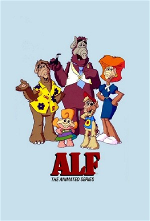

ALF: The Animated Series (1987)
AnimationComedyFamilyScience Fiction
| Year | 1987 |
|---|---|
| Rating | TV-Y |
| Status | Completed |
| Seasons | 2 |
| Episodes | 26 |
| Genre | Animation, Comedy, Family, Science Fiction |
ALF The Animated Series was a spin off of the live action ALF series and followed ALF's adventures on his home planet of Melmac with his family, his girlfriend Rhonda and friends Skip and Sloop. ALF The Animated Series first aired on NBC in September 26, 1987 and was produced by DIC Entertainment and Saban Productions in association with Alien Productions.
Episodes
Season 1
| # | Title | Air Date | Synopsis |
|---|---|---|---|
| 1 | Phantom Pilot | 1987-09-26 | An unlikely ally helps Gordon defend Melmac when the evil Larson Petty returns to invade the planet. |
| 2 | Hair Today, Bald Tomorrow | 1987-10-03 | After Harry uses Gordon's hair to build his nest, Gordon finds himself heading to Madame Pokipsi's shack for a baldness cure, only to insult her and leave while cursed with a "Baldness Touch". |
| 3 | Two for the Brig | 1987-10-10 | Gordon and Sergeant Staff end up going to prison after mistaking their ship for a vacation cruise liner. |
| 4 | Gordon Ships Out | 1987-10-24 | Gordon, Rick, and Skip decide to pool their savings for a sailing yacht, but end up marooned on an island thanks to a Pit Termite that Skip names Woody. |
| 5 | The Birdman of Melmac | 1987-10-31 | The Shumways' pet bird Harry is dubbed a rare Melmacian species, and Harry lets fame go to his head as a result. |
| 6 | Pismo and the Orbit Gyro | 1987-11-07 | The Orbit Gyro needs its regular maintenance, but it results in its main operator, a robot named Pismo, having a few screws loose. |
| 7 | 20,000 Years in Driving School | 1987-11-14 | After getting "Gooped" on the highway, Gordon Shumway has his driver's license revoked and must attend driving school to regain it. |
| 8 | Pride of the Shumways | 1987-11-21 | Gordon is the star player for the Orbit Guard Bouillabaisse-ball team, but a blow to the head renders him amnesiac, putting him out of the game and his little brother Curtis in. |
| 9 | Captain Bobaroo | 1987-12-05 | A bump on the head has Bob Shumway thinking he is a "Captain Kangaroo"-esque TV show host. |
| 10 | Neep at the Races | 1987-12-12 | When Neep runs past a motorcycle gang led by the nefarious Snake, Gordon realizes that Neep has what it takes to compete in dog races. Gordon convinces Snake and his cronies to invest the money for Neep to compete. Neep |
| 11 | Salad Wars | 1987-12-19 | The title of this episode is a parody of the epic film series Star Wars by George Lucas. |
| 12 | Tough Shrimp Don’t Dance | 1988-01-02 | Gordon Shumway must rescue an alien shrimp race called the Muklukians from Larson Petty - with some unlikely help from one of their own. |
| 13 | Home Away from Home | 1988-01-16 | When his parents go away on vacation, Gordon is left to babysit his siblings. |
Season 2
| # | Title | Air Date | Synopsis |
|---|---|---|---|
| 1 | Flodust Memories | 1988-09-10 | Flo Shumway becomes the Mom of the Millennium, but is her popularity becoming more important than her family? |
| 2 | Family Feud | 1988-09-17 | After losing to the Shumways on a noted game show, the Fustermans declare war on their former friends, and Gordon and Rick end up caught in the crossfire. |
| 3 | Clams Never Sang for My Father | 1988-09-24 | The traditional Mayonnaise Lodge rite of passage has Bob Shumway and Frank Fusterman pitted against each other in the clam-wrestling contest - but their sons want no part of it. |
| 4 | A Mid-Goomer Night’s Dream | 1988-10-01 | The holiday of Goomer is upon Melmac, and Larson Petty is intent on getting his gift of foam - but while trying to kidnap the real Goomer, he ends up capturing Bob Shumway in a Goomer suit. Gordon and his sister Augie mu |
| 5 | The Bone Losers | 1988-10-08 | Bones from a museum go missing. |
| 6 | Thank Gordon for Little Girls | 1988-10-15 | Gordon invents an all-purpose object named the "Shumwidget", but Augie and her scout troupe end up with the bragging rights. |
| 7 | Hooray for Mellywood | 1988-10-29 | A movie crew has come to Melmac to film the life of Gordon Shumway - but will Gordon himself end up a huge star, or on the cutting room floor? |
| 8 | The Spy from East Velcro | 1988-11-12 | Alf must figure out who the spy his among his friends. |
| 9 | He Ain’t Seafood, He’s My Brother | 1988-11-19 | Renegade Muklukians kidnap Curtis Shumway and return him to their planet as part of a scheme to claim the throne of Mukluk. Fescue returns to Melmac to ask Gordon for help in dethroning the renegades and finding the true |
| 10 | Looking for Love in All the Wrong Places | 1988-12-03 | Gordon tries to fix Rick up with a girl named Elaine - but a misunderstanding leads her to fall in love with Gordon. |
| 11 | The Slugs of Wrath | 1988-12-10 | Alf must stop a slug invasion. |
| 12 | Housesitting for Pokipsi | 1988-12-17 | After Gordon's insults about Madame Pokipsi get out of hand, he and his friends, Rick and Skip, are stuck housesitting for the Madame while she is out of town. |
| 13 | Skipper’s Got a Brand New Dad | 1989-01-07 | Larson Petty discovers that his family has left behind a huge fortune, but it can only be turned over to the rightful heir - Larson Petty's son. The only problem is, he has no children. Meanwhile, Gordon and Rick find ou |